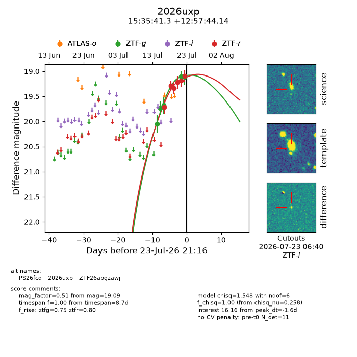
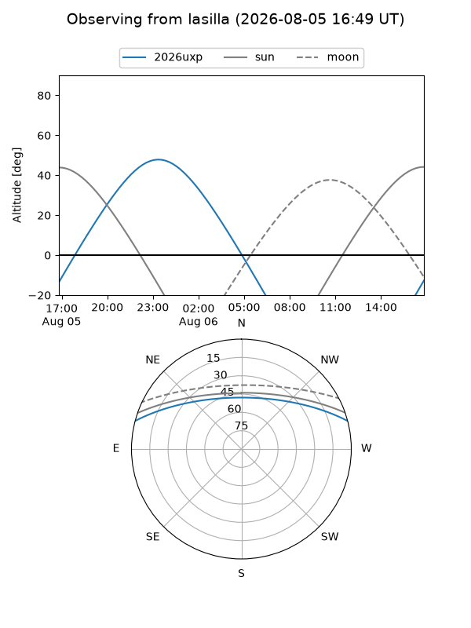
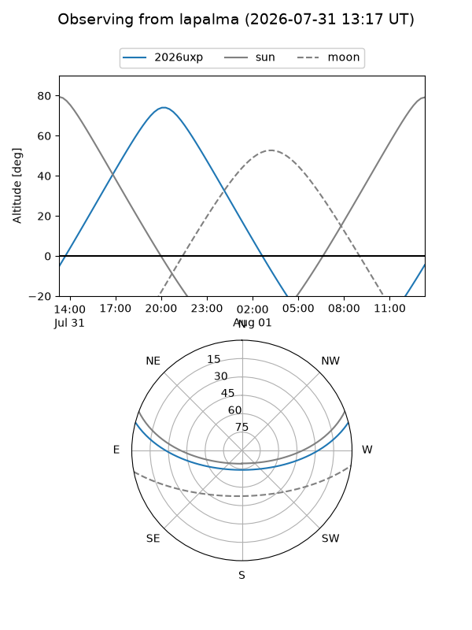
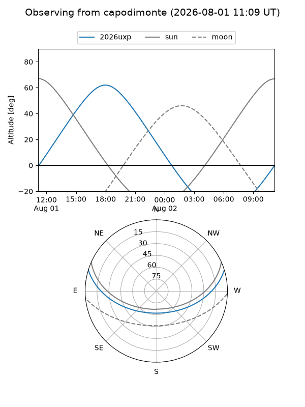

2026uxp
Target 2026uxp at 2026-07-23 21:19
Aliases and brokers:
FINK-ZTF: ztf.fink-portal.org/ZTF26abgzawj
Lasair-ZTF: lasair-ztf.lsst.ac.uk/objects/ZTF26abgzawj
ALeRCE-ZTF: alerce.online/object/ZTF26abgzawj
YSE-PZ: ziggy.ucolick.org/yse/transient_detail/2026uxp
TNS name: wis-tns.org/object/2026uxp
Direct TNS query: direct search
alt names
ZTF26abgzawj (ztf,fink_ztf)
2026uxp (tns,yse)
PS26fcd (panstarrs)
Coordinates:
equatorial (ra, dec) = 233.9221,+12.96226
equatorial (HMS+DMS) = 15:35:41.31,+12:57:44.14
galactic (l, b) = (20.9878,+49.13259)
Flags:
TNS type: nan
peak dt: -1.6
Photometry:
last ztfg=19.12, ztfr=19.09
5 ztfg, 6 ztfr detections
Lightcurve

Visibility



Additional plots